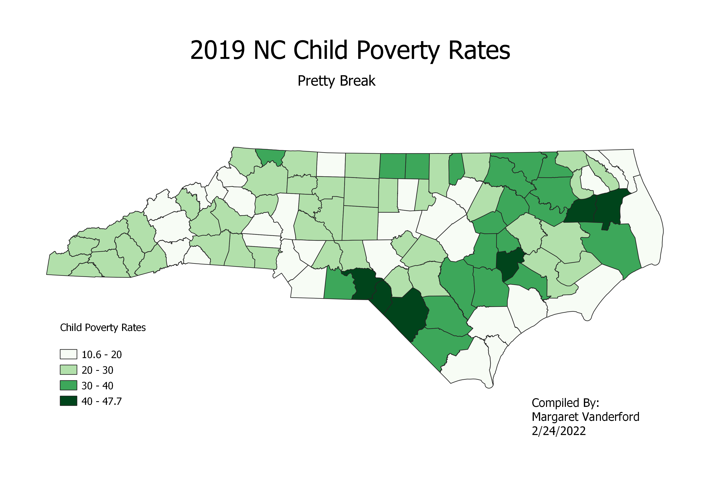
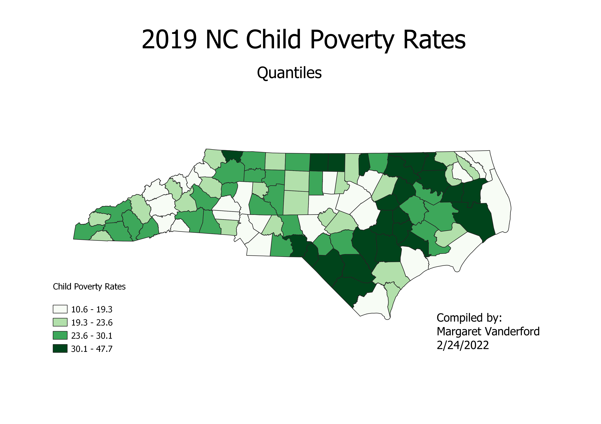
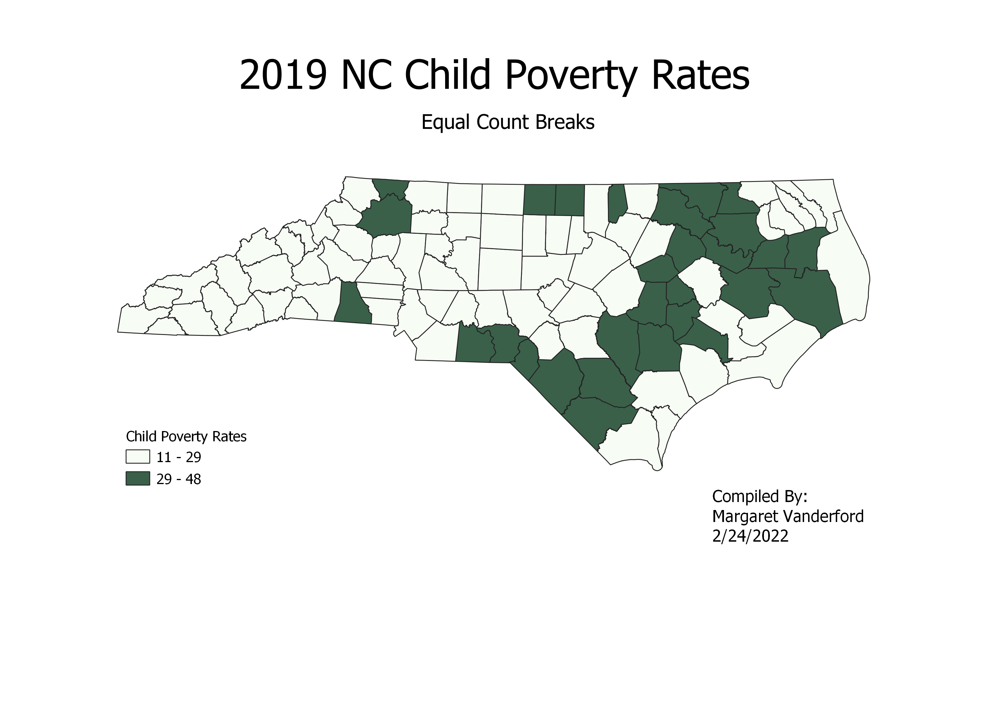

The child poverty rate is calculated by dividing the number of children in poverty by the total number of children in each county.
The darker green corresponds to a higher % of children in poverty per county.
The pretty break categorizes the poverty rates in a visually pleasing way.
The quantile break categorizes the poverty rates by statistical quantiles within the data (0-25 percentile; 25-50 percentile; 51-75 percentile; 76-100 percentile).
The equal count break categorizes the poverty rates into two groups with the 50 lower poverty counties in the first group and the 50 higher poverty counties in the second group.
